Chapter 17: Innate Nonspecific Host Defenses¶
Introduction¶
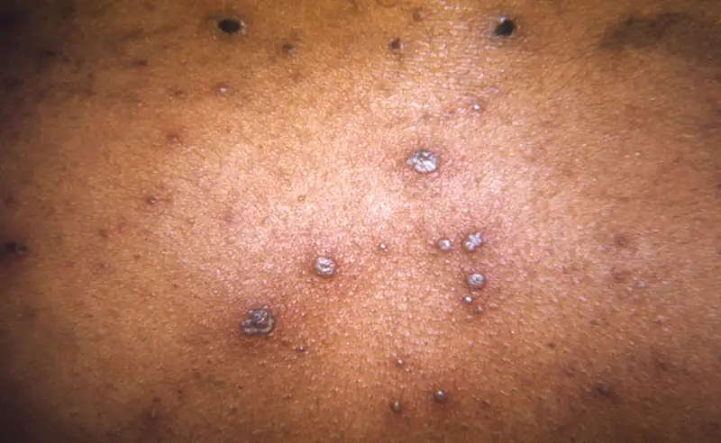
Despite relatively constant exposure to pathogenic microbes in the environment, humans do not generally suffer from constant infection or disease. Under most circumstances, the body is able to defend itself from the threat of infection thanks to a complex immune system designed to repel, kill, and expel disease-causing invaders. Immunity as a whole can be described as two interrelated parts: nonspecific innate immunity, which is the subject of this chapter, and specific adaptive host defenses, which are discussed in the next chapter.
The nonspecific innate immune response provides a first line of defense that can often prevent infections from gaining a solid foothold in the body. These defenses are described as nonspecific because they do not target any specific pathogen; rather, they defend against a wide range of potential pathogens. They are called innate because they are built-in mechanisms of the human organism. Unlike the specific adaptive defenses, they are not acquired over time and they have no “memory” (they do not improve after repeated exposures to specific pathogens).
Broadly speaking, nonspecific innate defenses provide an immediate (or very rapid) response against potential pathogens. However, these responses are neither perfect nor impenetrable. They can be circumvented by pathogens on occasion, and sometimes they can even cause damage to the body, contributing to the signs and symptoms of infection (Figure 17.1).
17.1 Physical Defenses¶
Learning Objectives
By the end of this section, you will be able to:
- Describe the various physical barriers and mechanical defenses that protect the human body against infection and disease
- Describe the role of microbiota as a first-line defense against infection and disease
Clinical Focus: Part 1
Angela, a 25-year-old female patient in the emergency department, is having some trouble communicating verbally because of shortness of breath. A nurse observes constriction and swelling of the airway and labored breathing. The nurse asks Angela if she has a history of asthma or allergies. Angela shakes her head no, but there is fear in her eyes. With some difficulty, she explains that her father died suddenly at age 27, when she was just a little girl, of a similar respiratory attack. The underlying cause had never been identified.
- What are some possible causes of constriction and swelling of the airway?
- What causes swelling of body tissues in general?
Jump to the next Clinical Focus box.
Nonspecific innate immunity can be characterized as a multifaceted system of defenses that targets invading pathogens in a nonspecific manner. In this chapter, we have divided the numerous defenses that make up this system into three categories: physical defenses, chemical defenses, and cellular defenses. However, it is important to keep in mind that these defenses do not function independently, and the categories often overlap. Table 17.1 provides an overview of the nonspecific defenses discussed in this chapter.
Table 17.1
| Overview of Nonspecific Innate Immune Defenses | |
|---|---|
| Physical defenses | Physical barriers |
| Mechanical defenses | |
| Microbiome | |
| Chemical defenses | Chemicals and enzymes in body fluids |
| Antimicrobial peptides | |
| Plasma protein mediators | |
| Cytokines | |
| Inflammation-eliciting mediators | |
| Cellular defenses | Granulocytes |
| Agranulocytes | |
Physical defenses provide the body’s most basic form of nonspecific defense. They include physical barriers to microbes, such as the skin and mucous membranes, as well as mechanical defenses that physically remove microbes and debris from areas of the body where they might cause harm or infection. In addition, the microbiome provides a measure of physical protection against disease, as microbes of the normal microbiota compete with pathogens for nutrients and cellular binding sites necessary to cause infection.
Physical Barriers¶
Physical barriers play an important role in preventing microbes from reaching tissues that are susceptible to infection. At the cellular level, barriers consist of cells that are tightly joined to prevent invaders from crossing through to deeper tissue. For example, the endothelial cells that line blood vessels have very tight cell-to-cell junctions, blocking microbes from gaining access to the bloodstream. Cell junctions are generally composed of cell membrane proteins that may connect with the extracellular matrix or with complementary proteins from neighboring cells. Tissues in various parts of the body have different types of cell junctions. These include tight junctions, desmosomes, and gap junctions, as illustrated in Figure 17.2. Invading microorganisms may attempt to break down these substances chemically, using enzymes such as proteases that can cause structural damage to create a point of entry for pathogens.
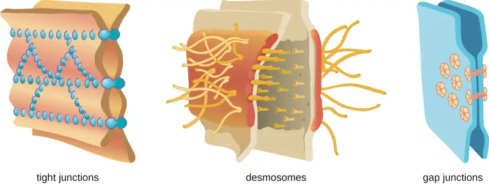
The Skin Barrier¶
One of the body’s most important physical barriers is the skin barrier, which is composed of three layers of closely packed cells. The thin upper layer is called the epidermis. A second, thicker layer, called the dermis, contains hair follicles, sweat glands, nerves, and blood vessels. A layer of fatty tissue called the hypodermis lies beneath the dermis and contains blood and lymph vessels (Figure 17.3).
![A diagram of a section of skin. The bottom layer is the hypodermis and is mostly made up of large circular cells (fatty tissue). The next layer up, and the thickest layer is the dermis. At the bottom of the dermis are blood vessels, lymph vessels, and nerves, all of which run throughout the dermis. Sweat glands are coiled tubes that lead to the surface. Hair follicles are thick vase-shaped structures containing a hair; an oil gland is attached to the hair follicle. The top layer is the epidermis and is made of many layers of flat cells.](img/osc-microbio-17-02-skin.webp)
The topmost layer of skin, the epidermis, consists of cells that are packed with keratin. These dead cells remain as a tightly connected, dense layer of protein-filled cell husks on the surface of the skin. The keratin makes the skin’s surface mechanically tough and resistant to degradation by bacterial enzymes. Fatty acids on the skin’s surface create a dry, salty, and acidic environment that inhibits the growth of some microbes and is highly resistant to breakdown by bacterial enzymes. In addition, the dead cells of the epidermis are frequently shed, along with any microbes that may be clinging to them. Shed skin cells are continually replaced with new cells from below, providing a new barrier that will soon be shed in the same way.
Infections can occur when the skin barrier is compromised or broken. A wound can serve as a point of entry for opportunistic pathogens, which can infect the skin tissue surrounding the wound and possibly spread to deeper tissues.
Case in Point: Every Rose Has its Thorn
Mike, a gardener from southern California, recently noticed a small red bump on his left forearm. Initially, he did not think much of it, but soon it grew larger and then ulcerated (opened up), becoming a painful lesion that extended across a large part of his forearm (Figure 17.4). He went to an urgent care facility, where a physician asked about his occupation. When he said he was a landscaper, the physician immediately suspected a case of sporotrichosis, a type of fungal infection known as rose gardener’s disease because it often afflicts landscapers and gardening enthusiasts.
Under most conditions, fungi cannot produce skin infections in healthy individuals. Fungi grow filaments known as hyphae, which are not particularly invasive and can be easily kept at bay by the physical barriers of the skin and mucous membranes. However, small wounds in the skin, such as those caused by thorns, can provide an opening for opportunistic pathogens like Sporothrix schenkii, a soil-dwelling fungus and the causative agent of rose gardener’s disease. Once it breaches the skin barrier, S. schenkii can infect the skin and underlying tissues, producing ulcerated lesions like Mike’s. Compounding matters, other pathogens may enter the infected tissue, causing secondary bacterial infections.
Luckily, rose gardener’s disease is treatable. Mike’s physician wrote him a prescription for some antifungal drugs as well as a course of antibiotics to combat secondary bacterial infections. His lesions eventually healed, and Mike returned to work with a new appreciation for gloves and protective clothing.
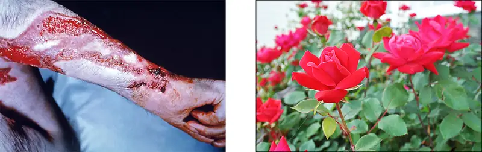
Mucous Membranes¶
The mucous membranes lining the nose, mouth, lungs, and urinary and digestive tracts provide another nonspecific barrier against potential pathogens. Mucous membranes consist of a layer of epithelial cells bound by tight junctions. The epithelial cells secrete a moist, sticky substance called mucus, which covers and protects the more fragile cell layers beneath it and traps debris and particulate matter, including microbes. Mucus secretions also contain antimicrobial peptides.
In many regions of the body, mechanical actions serve to flush mucus (along with trapped or dead microbes) out of the body or away from potential sites of infection. For example, in the respiratory system, inhalation can bring microbes, dust, mold spores, and other small airborne debris into the body. This debris becomes trapped in the mucus lining the respiratory tract, a layer known as the mucociliary blanket. The epithelial cells lining the upper parts of the respiratory tract are called ciliated epithelial cells because they have hair-like appendages known as cilia. Movement of the cilia propels debris-laden mucus out and away from the lungs. The expelled mucus is then swallowed and destroyed in the stomach, or coughed up, or sneezed out (Figure 17.5). This system of removal is often called the mucociliary escalator.
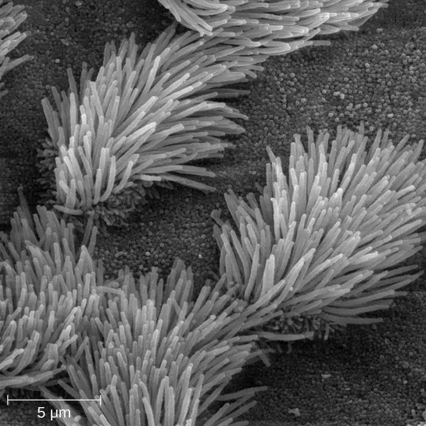
The mucociliary escalator is such an effective barrier to microbes that the lungs, the lowermost (and most sensitive) portion of the respiratory tract, were long considered to be a sterile environment in healthy individuals. Only recently has research suggested that healthy lungs may have a small normal microbiota. Disruption of the mucociliary escalator by the damaging effects of smoking or diseases such as cystic fibrosis can lead to increased colonization of bacteria in the lower respiratory tract and frequent infections, which highlights the importance of this physical barrier to host defenses.
Like the respiratory tract, the digestive tract is a portal of entry through which microbes enter the body, and the mucous membranes lining the digestive tract provide a nonspecific physical barrier against ingested microbes. The intestinal tract is lined with epithelial cells, interspersed with mucus-secreting goblet cells (Figure 17.6). This mucus mixes with material received from the stomach, trapping foodborne microbes and debris. The mechanical action of peristalsis, a series of muscular contractions in the digestive tract, moves the sloughed mucus and other material through the intestines, rectum, and anus, excreting the material in feces.
![Figure a is a diagram of a single goblet cell. Cell is tall and slightly hour-glass shaped. The bottom of the cell is filled with a nucleus. The top shows the Golgi apparatus (folds of membranes), rough endoplasmic reticulum (folds of membranes with dots), secretory vesicles containing mucin (large bubbles), and microvilli (finger-like projections at the top). Figure b is a micrograph of two goblet cells within a row of epithelial cells. The epithelial cells are rectangular with a large nucleus visible. The goblet cells are thinner and have a clear (uncolored) top.](img/osc-microbio-17-02-gobletcell.webp)
Endothelia¶
The epithelial cells lining the urogenital tract, blood vessels, lymphatic vessels, and certain other tissues are known as endothelia. These tightly packed cells provide a particularly effective frontline barrier against invaders. The endothelia of the blood-brain barrier, for example, protect the central nervous system (CNS), which consists of the brain and the spinal cord. The CNS is one of the most sensitive and important areas of the body, as microbial infection of the CNS can quickly lead to serious and often fatal inflammation. The cell junctions in the blood vessels traveling through the CNS are some of the tightest and toughest in the body, preventing any transient microbes in the bloodstream from entering the CNS. This keeps the cerebrospinal fluid that surrounds and bathes the brain and spinal cord sterile under normal conditions.
Check Your Understanding
- Describe how the mucociliary escalator functions.
- Name two places you would find endothelia.
Mechanical Defenses¶
In addition to physical barriers that keep microbes out, the body has a number of mechanical defenses that physically remove pathogens from the body, preventing them from taking up residence. We have already discussed several examples of mechanical defenses, including the shedding of skin cells, the expulsion of mucus via the mucociliary escalator, and the excretion of feces through intestinal peristalsis. Other important examples of mechanical defenses include the flushing action of urine and tears, which both serve to carry microbes away from the body. The flushing action of urine is largely responsible for keeping the urinary tract, which includes the kidneys, ureters, and urinary bladder, free of transient microorganisms that may include pathogens. Urine passing out of the body washes out transient microorganisms, preventing them from taking up residence. The eyes also have physical barriers and mechanical mechanisms for preventing infections. The eyelashes and eyelids prevent dust and airborne microorganisms from reaching the surface of the eye. Any microbes or debris that make it past these physical barriers may be flushed out by the mechanical action of blinking, which bathes the eye in tears, washing debris away (Figure 17.7).
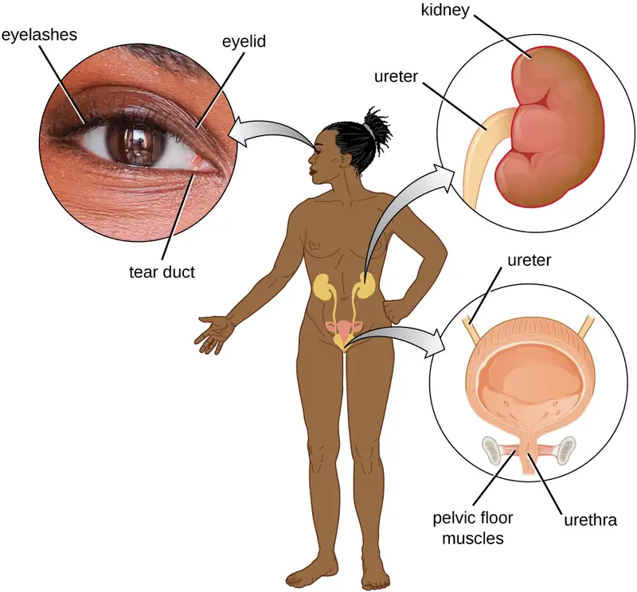
Check Your Understanding
- Name two mechanical defenses that protect the eyes.
Microbiome¶
In various regions of the body, resident microbiota serve as an important first-line defense against invading pathogens. Through their occupation of cellular binding sites and competition for available nutrients, the resident microbiota prevent the critical early steps of pathogen attachment and proliferation required for the establishment of an infection. For example, in the vagina, members of the resident microbiota compete with opportunistic pathogens like the yeast Candida. This competition prevents infections by limiting the availability of nutrients, thus inhibiting the growth of Candida, keeping its population in check. Similar competitions occur between the microbiota and potential pathogens on the skin, in the upper respiratory tract, and in the gastrointestinal tract. As will be discussed later in this chapter, the resident microbiota also contribute to the chemical defenses of the innate nonspecific host defenses.
The importance of the normal microbiota in host defenses is highlighted by the increased susceptibility to infectious diseases when the microbiota is disrupted or eliminated. Treatment with antibiotics can significantly deplete the normal microbiota of the gastrointestinal tract, providing an advantage for pathogenic bacteria to colonize and cause diarrheal infection. In the case of diarrhea caused by Clostridioides difficile, the infection can be severe and potentially lethal. One strategy for treating C. difficile infections is fecal transplantation, which involves the transfer of fecal material from a donor (screened for potential pathogens) into the intestines of the recipient patient as a method of restoring the normal microbiota and combating C. difficile infections.
Table 17.2 provides a summary of the physical defenses discussed in this section.
Table 17.2
| Physical Defenses of Nonspecific Innate Immunity | ||
|---|---|---|
| Defense | Examples | Function |
| Cellular barriers | Skin, mucous membranes, endothelial cells | Deny entry to pathogens |
| Mechanical defenses | Shedding of skin cells, mucociliary sweeping, peristalsis, flushing action of urine and tears | Remove pathogens from potential sites of infection |
| Microbiome | Resident bacteria of the skin, upper respiratory tract, gastrointestinal tract, and genitourinary tract | Compete with pathogens for cellular binding sites and nutrients |
Check Your Understanding
- List two ways resident microbiota defend against pathogens.
17.2 Chemical Defenses¶
Learning Objectives
By the end of this section, you will be able to:
- Describe how enzymes in body fluids provide protection against infection or disease
- List and describe the function of antimicrobial peptides, complement components, cytokines, and acute-phase proteins
- Describe similarities and differences among classic, alternate, and lectin complement pathways
In addition to physical defenses, the innate nonspecific immune system uses a number of chemical mediators that inhibit microbial invaders. The term “chemical mediators” encompasses a wide array of substances found in various body fluids and tissues throughout the body. Chemical mediators may work alone or in conjunction with each other to inhibit microbial colonization and infection.
Some chemical mediators are endogenously produced, meaning they are produced by human body cells; others are produced exogenously, meaning that they are produced by certain microbes that are part of the microbiome. Some mediators are produced continually, bathing the area in the antimicrobial substance; others are produced or activated primarily in response to some stimulus, such as the presence of microbes.
Chemical and Enzymatic Mediators Found in Body Fluids¶
Fluids produced by the skin include examples of both endogenous and exogenous mediators. Sebaceous glands in the dermis secrete an oil called sebum that is released onto the skin surface through hair follicles. This sebum is an endogenous mediator, providing an additional layer of defense by helping seal off the pore of the hair follicle, preventing bacteria on the skin’s surface from invading sweat glands and surrounding tissue (Figure 17.8). Certain members of the microbiome, such as the bacterium Cutibacterium acnes and the fungus Malassezia, among others, can use lipase enzymes to degrade sebum, using it as a food source. This produces oleic acid, which creates a mildly acidic environment on the surface of the skin that is inhospitable to many pathogenic microbes. Oleic acid is an example of an exogenously produced mediator because it is produced by resident microbes and not directly by body cells.
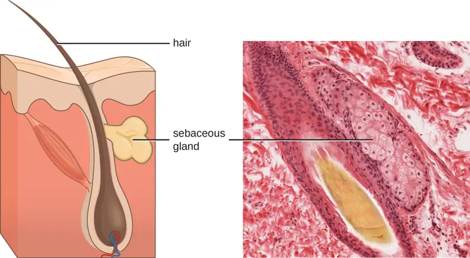
Environmental factors that affect the microbiota of the skin can have a direct impact on the production of chemical mediators. Low humidity or decreased sebum production, for example, could make the skin less habitable for microbes that produce oleic acid, thus making the skin more susceptible to pathogens normally inhibited by the skin’s low pH. Many skin moisturizers are formulated to counter such effects by restoring moisture and essential oils to the skin.
The digestive tract also produces a large number of chemical mediators that inhibit or kill microbes. In the oral cavity, saliva contains mediators such as lactoperoxidase enzymes, and mucus secreted by the esophagus contains the antibacterial enzyme lysozyme. In the stomach, highly acidic gastric fluid kills most microbes. In the lower digestive tract, the intestines have pancreatic and intestinal enzymes, antibacterial peptides (cryptins), bile produced from the liver, and specialized Paneth cells that produce lysozyme. Together, these mediators are able to eliminate most pathogens that manage to survive the acidic environment of the stomach.
In the urinary tract, urine flushes microbes out of the body during urination. Furthermore, the slight acidity of urine (the average pH is about 6) inhibits the growth of many microbes and potential pathogens in the urinary tract.
The female reproductive system employs lactate, an exogenously produced chemical mediator, to inhibit microbial growth. The cells and tissue layers composing the vagina produce glycogen, a branched and more complex polymer of glucose. Lactobacilli in the area ferment glycogen to produce lactate, lowering the pH in the vagina and inhibiting transient microbiota, opportunistic pathogens like Candida (a yeast associated with vaginal infections), and other pathogens responsible for sexually transmitted diseases.
In the eyes, tears contain the chemical mediators lysozyme and lactoferrin, both of which are capable of eliminating microbes that have found their way to the surface of the eyes. Lysozyme cleaves the bond between NAG and NAM in peptidoglycan, a component of the cell wall in bacteria. It is more effective against gram-positive bacteria, which lack the protective outer membrane associated with gram-negative bacteria. Lactoferrin inhibits microbial growth by chemically binding and sequestering iron. This effectually starves many microbes that require iron for growth.
In the ears, cerumen (earwax) exhibits antimicrobial properties due to the presence of fatty acids, which lower the pH to between 3 and 5.
The respiratory tract uses various chemical mediators in the nasal passages, trachea, and lungs. The mucus produced in the nasal passages contains a mix of antimicrobial molecules similar to those found in tears and saliva (e.g., lysozyme, lactoferrin, lactoperoxidase). Secretions in the trachea and lungs also contain lysozyme and lactoferrin, as well as a diverse group of additional chemical mediators, such as the lipoprotein complex called surfactant, which has antibacterial properties.
Check Your Understanding
- Explain the difference between endogenous and exogenous mediators
- Describe how pH affects antimicrobial defenses
Antimicrobial Peptides¶
The antimicrobial peptides (AMPs) are a special class of nonspecific cell-derived mediators with broad-spectrum antimicrobial properties. Some AMPs are produced routinely by the body, whereas others are primarily produced (or produced in greater quantities) in response to the presence of an invading pathogen. Research has begun exploring how AMPs can be used in the diagnosis and treatment of disease.
AMPs may induce cell damage in microorganisms in a variety of ways, including by inflicting damage to membranes, destroying DNA and RNA, or interfering with cell-wall synthesis. Depending on the specific antimicrobial mechanism, a particular AMP may inhibit only certain groups of microbes (e.g., gram-positive or gram-negative bacteria) or it may be more broadly effective against bacteria, fungi, protozoa, and viruses. Many AMPs are found on the skin, but they can also be found in other regions of the body.
A family of AMPs called defensins can be produced by epithelial cells throughout the body as well as by cellular defenses such as macrophages and neutrophils (see Cellular Defenses). Defensins may be secreted or act inside host cells; they combat microorganisms by damaging their plasma membranes. AMPs called bacteriocins are produced exogenously by certain members of the resident microbiota within the gastrointestinal tract. The genes coding for these types of AMPs are often carried on plasmids and can be passed between different species within the resident microbiota through lateral or horizontal gene transfer.
There are numerous other AMPs throughout the body. The characteristics of a few of the more significant AMPs are summarized in Table 17.3.
Table 17.3
| Characteristics of Selected Antimicrobial Peptides (AMPs) | ||||
|---|---|---|---|---|
| AMP | Secreted by | Body site | Pathogens inhibited | Mode of action |
| Bacteriocins | Resident microbiota | Gastrointestinal tract | Bacteria | Disrupt membrane |
| Cathelicidin | Epithelial cells, macrophages, and other cell types | Skin | Bacteria and fungi | Disrupts membrane |
| Defensins | Epithelial cells, macrophages, neutrophils | Throughout the body | Fungi, bacteria, and many viruses | Disrupt membrane |
| Dermcidin | Sweat glands | Skin | Bacteria and fungi | Disrupts membrane integrity and ion channels |
| Histatins | Salivary glands | Oral cavity | Fungi | Disrupt intracellular function |
Check Your Understanding
- Why are antimicrobial peptides (AMPs) considered nonspecific defenses?
Plasma Protein Mediators¶
Many nonspecific innate immune factors are found in plasma, the fluid portion of blood. Plasma contains electrolytes, sugars, lipids, and proteins, each of which helps to maintain homeostasis (i.e., stable internal body functioning), and contains the proteins involved in the clotting of blood. Additional proteins found in blood plasma, such as acute-phase proteins, complement proteins, and cytokines, are involved in the nonspecific innate immune response.
Micro Connections: Plasma versus Serum
There are two terms for the fluid portion of blood: plasma and serum. How do they differ if they are both fluid and lack cells? The fluid portion of blood left over after coagulation (blood cell clotting) has taken place is serum. Although molecules such as many vitamins, electrolytes, certain sugars, complement proteins, and antibodies are still present in serum, clotting factors are largely depleted. Plasma, conversely, still contains all the clotting elements. To obtain plasma from blood, an anticoagulant must be used to prevent clotting. Examples of anticoagulants include heparin and ethylene diamine tetraacetic acid (EDTA). Because clotting is inhibited, once obtained, the sample must be gently spun down in a centrifuge. The heavier, denser blood cells form a pellet at the bottom of a centrifuge tube, while the fluid plasma portion, which is lighter and less dense, remains above the cell pellet.
Acute-Phase Proteins¶
The acute-phase proteins are another class of antimicrobial mediators. Acute-phase proteins are primarily produced in the liver and secreted into the blood in response to inflammatory molecules from the immune system. Examples of acute-phase proteins include C-reactive protein, serum amyloid A, ferritin, transferrin, fibrinogen, and mannose-binding lectin. Each of these proteins has a different chemical structure and inhibits or destroys microbes in some way (Table 17.4).
Table 17.4
| Some Acute-Phase Proteins and Their Functions | |
|---|---|
| C-reactive protein | Coats bacteria (opsonization), preparing them for ingestion by phagocytes |
| Serum amyloid A | |
| Ferritin | Bind and sequester iron, thereby inhibiting the growth of pathogens |
| Transferrin | |
| Fibrinogen | Involved in formation of blood clots that trap bacterial pathogens |
| Mannose-binding lectin | Activates complement cascade |
The Complement System¶
The complement system is a group of plasma protein mediators that can act as an innate nonspecific defense while also serving to connect innate and adaptive immunity (discussed in the next chapter). The complement system is composed of more than 30 proteins (including C1 through C9) that normally circulate as precursor proteins in blood. These precursor proteins become activated when stimulated or triggered by a variety of factors, including the presence of microorganisms. Complement proteins are considered part of innate nonspecific immunity because they are always present in the blood and tissue fluids, allowing them to be activated quickly. Also, when activated through the alternative pathway (described later in this section), complement proteins target pathogens in a nonspecific manner.
The process by which circulating complement precursors become functional is called complement activation. This process is a cascade that can be triggered by one of three different mechanisms, known as the alternative, classical, and lectin pathways.
The alternative pathway is initiated by the spontaneous activation of the complement protein C3. The hydrolysis of C3 produces two products, C3a and C3b. When no invader microbes are present, C3b is very quickly degraded in a hydrolysis reaction using the water in the blood. However, if invading microbes are present, C3b attaches to the surface of these microbes. Once attached, C3b will recruit other complement proteins in a cascade (Figure 17.9).
The classical pathway provides a more efficient mechanism of activating the complement cascade, but it depends upon the production of antibodies by the specific adaptive immune defenses. To initiate the classical pathway, a specific antibody must first bind to the pathogen to form an antibody-antigen complex. This activates the first protein in the complement cascade, the C1 complex. The C1 complex is a multipart protein complex, and each component participates in the full activation of the overall complex. Following recruitment and activation of the C1 complex, the remaining classical pathway complement proteins are recruited and activated in a cascading sequence (Figure 17.9).
The lectin activation pathway is similar to the classical pathway, but it is triggered by the binding of mannose-binding lectin, an acute-phase protein, to carbohydrates on the microbial surface. Like other acute-phase proteins, lectins are produced by liver cells and are commonly upregulated in response to inflammatory signals received by the body during an infection (Figure 17.9).
![A diagram outlining the three complement pathways. At the top is the invading pathogen. Two antibodies bind to an antigen on the surface of the pathogen. C1 binds to the antigen-antibody complex. This is labeled the classic pathway. C1 causes C2 and C4 to be cut into two pieces. Parts of C2 and C4 bind together to form C3 convertase. The alternate pathway also leads to C3 convertase but does so directly. C3 convertase then cuts C3 in two and one of these binds to C3 convertase. The resulting enzyme is called C5 convertase. C5 convertase lyses C5 into two pieces. One of the C5 pieces joins other complement proteins (C6, C7, C8 and C9) to create a pore through the membrane of the invading cell. This pore kills the cell. Endogenous proteins on the host cell protect the host membrane from the complement proteins.](img/osc-microbio-17-03-classaltpa.webp)
Although each complement activation pathway is initiated in a different way, they all provide the same protective outcomes: opsonization, inflammation, chemotaxis, and cytolysis. The term opsonization refers to the coating of a pathogen by a chemical substance (called an opsonin) that allows phagocytic cells to recognize, engulf, and destroy it more easily. Opsonins from the complement cascade include C1q, C3b, and C4b. Additional important opsonins include mannose-binding proteins and antibodies. The complement fragments C3a and C5a are well-characterized anaphylatoxins with potent proinflammatory functions. Anaphylatoxins activate mast cells, causing degranulation and the release of inflammatory chemical signals, including mediators that cause vasodilation and increased vascular permeability. C5a is also one of the most potent chemoattractants for neutrophils and other white blood cells, cellular defenses that will be discussed in the next section.
The complement proteins C6, C7, C8, and C9 assemble into a membrane attack complex (MAC), which allows C9 to polymerize into pores in the membranes of gram-negative bacteria. These pores allow water, ions, and other molecules to move freely in and out of the targeted cells, eventually leading to cell lysis and death of the pathogen (Figure 17.9). However, the MAC is only effective against gram-negative bacteria; it cannot penetrate the thick layer of peptidoglycan associated with cell walls of gram-positive bacteria. Since the MAC does not pose a lethal threat to gram-positive bacterial pathogens, complement-mediated opsonization is more important for their clearance.
Cytokines¶
Cytokines are soluble proteins that act as communication signals between cells. In a nonspecific innate immune response, various cytokines may be released to stimulate production of chemical mediators or other cell functions, such as cell proliferation, cell differentiation, inhibition of cell division, apoptosis, and chemotaxis.
When a cytokine binds to its target receptor, the effect can vary widely depending on the type of cytokine and the type of cell or receptor to which it has bound. The function of a particular cytokine can be described as autocrine, paracrine, or endocrine (Figure 17.10). In autocrine function, the same cell that releases the cytokine is the recipient of the signal; in other words, autocrine function is a form of self-stimulation by a cell. In contrast, paracrine function involves the release of cytokines from one cell to other nearby cells, stimulating some response from the recipient cells. Last, endocrine function occurs when cells release cytokines into the bloodstream to be carried to target cells much farther away.
![Cytokines are molecular messengers. In autocrine signaling the same cell secretes and receives cytokine signals. The diagram shows a single cell releasing molecules and having the molecules bind to receptors on its surface. In paracrine signaling cytokine signals are secreted to a nearby cell. The diagram shows a cell labeled secreting cell secreting cytokines. A nearby cell has receptors for the molecules. In endocrine signaling cytokine signals are secreted to the circulatory system and travel to distant cells. The diagram shows the secreting cell secreting cytokines; the cytokines then travel through a blood vessel and bind to receptors on a distant cell.](img/osc-microbio-17-01-cytokine.webp)
Three important classes of cytokines are the interleukins, chemokines, and interferons. The interleukins were originally thought to be produced only by leukocytes (white blood cells) and to only stimulate leukocytes, thus the reasons for their name. Although interleukins are involved in modulating almost every function of the immune system, their role in the body is not restricted to immunity. Interleukins are also produced by and stimulate a variety of cells unrelated to immune defenses.
The chemokines are chemotactic factors that recruit leukocytes to sites of infection, tissue damage, and inflammation. In contrast to more general chemotactic factors, like complement factor C5a, chemokines are very specific in the subsets of leukocytes they recruit.
Interferons are a diverse group of immune signaling molecules and are especially important in our defense against viruses. Type I interferons (interferon-α and interferon-β) are produced and released by cells infected with virus. These interferons stimulate nearby cells to stop production of mRNA, destroy RNA already produced, and reduce protein synthesis. These cellular changes inhibit viral replication and production of mature virus, slowing the spread of the virus. Type I interferons also stimulate various immune cells involved in viral clearance to more aggressively attack virus-infected cells. Type II interferon (interferon-γ) is an important activator of immune cells (Figure 17.11).
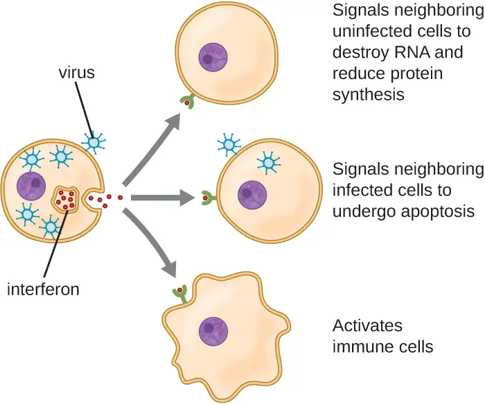
Inflammation-Eliciting Mediators¶
Many of the chemical mediators discussed in this section contribute in some way to inflammation and fever, which are nonspecific immune responses discussed in more detail in Inflammation and Fever. Cytokines stimulate the production of acute-phase proteins such as C-reactive protein and mannose-binding lectin in the liver. These acute-phase proteins act as opsonins, activating complement cascades through the lectin pathway.
Some cytokines also bind mast cells and basophils, inducing them to release histamine, a proinflammatory compound. Histamine receptors are found on a variety of cells and mediate proinflammatory events, such as bronchoconstriction (tightening of the airways) and smooth muscle contraction.
In addition to histamine, mast cells may release other chemical mediators, such as leukotrienes. Leukotrienes are lipid-based proinflammatory mediators that are produced from the metabolism of arachidonic acid in the cell membrane of leukocytes and tissue cells. Compared with the proinflammatory effects of histamine, those of leukotrienes are more potent and longer lasting. Together, these chemical mediators can induce coughing, vomiting, and diarrhea, which serve to expel pathogens from the body.
Certain cytokines also stimulate the production of prostaglandins, chemical mediators that promote the inflammatory effects of kinins and histamines. Prostaglandins can also help to set the body temperature higher, leading to fever, which promotes the activities of white blood cells and slightly inhibits the growth of pathogenic microbes (see Inflammation and Fever).
Another inflammatory mediator, bradykinin, contributes to edema, which occurs when fluids and leukocytes leak out of the bloodstream and into tissues. It binds to receptors on cells in the capillary walls, causing the capillaries to dilate and become more permeable to fluids.
Check Your Understanding
- What do the three complement activation pathways have in common?
- Explain autocrine, paracrine, and endocrine signals.
- Name two important inflammation-eliciting mediators.
Clinical Focus: Part 2
To relieve the constriction of her airways, Angela is immediately treated with antihistamines and administered corticosteroids through an inhaler, and then monitored for a period of time. Though her condition does not worsen, the drugs do not seem to be alleviating her condition. She is admitted to the hospital for further observation, testing, and treatment.
Following admission, a clinician conducts allergy testing to try to determine if something in her environment might be triggering an allergic inflammatory response. A doctor orders blood analysis to check for levels of particular cytokines. A sputum sample is also taken and sent to the lab for microbial staining, culturing, and identification of pathogens that could be causing an infection.
- Which aspects of the innate immune system could be contributing to Angela’s airway constriction?
- Why was Angela treated with antihistamines?
- Why would the doctor be interested in levels of cytokines in Angela’s blood?
Jump to the next Clinical Focus box. Go back to the previous Clinical Focus box.
Table 17.5 provides a summary of the chemical defenses discussed in this section.
Table 17.5
| Chemical Defenses of Nonspecific Innate Immunity | ||
|---|---|---|
| Defense | Examples | Function |
| Chemicals and enzymes in body fluids | Sebum from sebaceous glands | Provides oil barrier protecting hair follicle pores from pathogens |
| Oleic acid from sebum and skin microbiota | Lowers pH to inhibit pathogens | |
| Lysozyme in secretions | Kills bacteria by attacking cell wall | |
| Acid in stomach, urine, and vagina | Inhibits or kills bacteria | |
| Digestive enzymes and bile | Kill bacteria | |
| Lactoferrin and transferrin | Bind and sequester iron, inhibiting bacterial growth | |
| Surfactant in lungs | Kills bacteria | |
| Antimicrobial peptides | Defensins, bacteriocins, dermcidin, cathelicidin, histatins, | Kill bacteria by attacking membranes or interfering with cell functions |
| Plasma protein mediators | Acute-phase proteins (C-reactive protein, serum amyloid A, ferritin, fibrinogen, transferrin, and mannose-binding lectin) | Inhibit the growth of bacteria and assist in the trapping and killing of bacteria |
| Complements C3b and C4b | Opsonization of pathogens to aid phagocytosis | |
| Complement C5a | Chemoattractant for phagocytes | |
| Complements C3a and C5a | Proinflammatory anaphylatoxins | |
| Cytokines | Interleukins | Stimulate and modulate most functions of immune system |
| Chemokines | Recruit white blood cells to infected area | |
| Interferons | Alert cells to viral infection, induce apoptosis of virus-infected cells, induce antiviral defenses in infected and nearby uninfected cells, stimulate immune cells to attack virus-infected cells | |
| Inflammation-eliciting mediators | Histamine | Promotes vasodilation, bronchoconstriction, smooth muscle contraction, increased secretion and mucus production |
| Leukotrienes | Promote inflammation; stronger and longer lasting than histamine | |
| Prostaglandins | Promote inflammation and fever | |
| Bradykinin | Increases vasodilation and vascular permeability, leading to edema | |
17.3 Cellular Defenses¶
Learning Objectives
By the end of this section, you will be able to:
- Identify and describe the components of blood
- Explain the process by which the formed elements of blood are formed (hematopoiesis)
- Describe the characteristics of formed elements found in peripheral blood, as well as their respective functions within the innate immune system
In the previous section, we discussed some of the chemical mediators found in plasma, the fluid portion of blood. The nonfluid portion of blood consists of various types of formed elements, so called because they are all formed from the same stem cells found in bone marrow. The three major categories of formed elements are: red blood cells (RBCs), also called erythrocytes; platelets, also called thrombocytes; and white blood cells (WBCs), also called leukocytes.
Red blood cells are primarily responsible for carrying oxygen to tissues. Platelets are cellular fragments that participate in blood clot formation and tissue repair. Several different types of WBCs participate in various nonspecific mechanisms of innate and adaptive immunity. In this section, we will focus primarily on the innate mechanisms of various types of WBCs.
Hematopoiesis¶
All of the formed elements of blood are derived from multipotent hematopoietic stem cells (HSCs) in the bone marrow. As the HSCs make copies of themselves in the bone marrow, individual cells receive different cues from the body that control how they develop and mature. As a result, the HSCs differentiate into different types of blood cells that, once mature, circulate in peripheral blood. This process of differentiation, called hematopoiesis, is shown in more detail in Figure 17.12.
In terms of sheer numbers, the vast majority of HSCs become erythrocytes. Much smaller numbers become leukocytes and platelets. Leukocytes can be further subdivided into granulocytes, which are characterized by numerous granules visible in the cytoplasm, and agranulocytes, which lack granules. Figure 17.13 provides an overview of the various types of formed elements, including their relative numbers, primary function, and lifespans.
![A flowchart showing progression of development for formed elements of blood. At the top is a multipotent hematopoietic stem cell (hemocytoblast). This cell divides and after division some of the new cells remain stem cells. Others go down one of two paths depending on the chemical signals received. One path begins with lymphoid stem cells which can either become natural killer cells (large granular lymphocytes) or small lymphocytes. The natural killer cell is a medium-large purple cell. Small lymphocytes can either become T lymphocytes or B lymphoctyes. The T and B lymphocytes are medium size cells with a large nucleus. B lymphocytes become plasma cells which are medium size cells with a large nucleus. The other option for the stem cell is to become a myeloid stem cell. Myeloid stem cells follow one of four paths. One path leads to megakaryocyte which leads to platelets. Platelets are small flecks. The second path leads to erythrocyte. Erythrocytes are small donut shaped red cells. The third path leads to mast cells. The fourth path leads to basophil, neutrophil, eosinophil, or monocyte. Basophils are medium cells with many dark purple spots. Neutrophils are medium pink cells with a multi-lobbed nucleus. Eosinophils are medium size cells with many pink spots. Monocytes lead to macrophages or dendritic cells. Macrophages are large irregularly shaped cells. Dendritic cells have longer tendons branching off of them.](img/osc-microbio-17-05-hematopo.webp)
![A table of the formed elements. Top row reads: formed element, major subtypes, numbers present per microliter and mean, appearance in standard blood smear, summary of functions, and comments. The first row is for erythrocytes (red blood cells). There are 5.2 million per microliter of blood (ranging from 4.4 – 6 million). These cells are flattened biconcave disks with no nucleus and a pale red color. Their function is to transport oxygen and some carbon dioxide between tissue and lungs. Their lifespan is approximately 120 days. The set of rows is classified under leukocytes (white blood cells). Leukocytes as a group number 7000 per microliter of blood (ranging from 5000-10,000). Leukocytes have an obvious dark-staining nucleus and function in body defenses. They exit capillaries and move into tissues. Their lifespan is usually a few hours or days. Leukocytes are divided into two groups. The first is granulocytes including neutrophils, eosinophils, and basophils. The second is agranulocytes including lymphocytes and monocytes. Granulocytes number 4300 per microliter of blood (range of 1800-9950). Granulocytes have abundant granules in the cytoplasm and the nucleus is normally lobed. Granulocytes function in nonspecific (innate) resistance to disease and are classified according to membrane-bound granules in the cytoplasm. Neutrophils make up 50-70% of the total leukocytes and number 4150 per microliter of blood (range 1800-7300). Neutrophils have a nucleus with lobes that increase with age and pale lilac granules. They are phagocytic and particularly effective against bacteria; they release toxic chemicals from granules. Neutrophils are the most common leukocyte with a lifespan of minutes to days. Eosinophils make up 1-3% of total leukocytes. They number 165 per microliter of blood (range of 0 – 700). Eosinophils have a nucleus that is generally two-lobed and bright red-orange granules. They are phagocytic cells and particularly effective with antigen-antibody complexes. Eosinophils release antihistamines and increase allergies, they also help fight parasitic infections. Eosinophils have a lifespan of minutes to days. Basophils make up less than 1% of total leukocytes. They number 44 per microliter of blood (range 0 – 150). Basophils have a nucleus that is generally two lobed but difficult to see due to the presence of heavy, dense, dark purple granules. Basophils promote inflammation and are the least common leukocyte. Their lifespan is unknown. Agranulocytes (including lymphocytes and monocytes) number 2640 per microliter of blood (range 1700 – 4900). Agranulocytes lack abundant granules in the cytoplasm and have a simple-shaped nucleus that may be indented. They function in body defenses and are grouped into two major cell types from different lineages. Lymphocytes make up 20-40% of total leukocytes and number 2185 per microliter of blood (range 1500-4000). Lymphocytes are spherical cells with a single, often large, nucleus occupying much of the cell’s volume. They stain purple and are seen in large (natural killer cells) and small (B and T cells) variants. Lymphocytes are primarily involved in specific (adaptive) immunity. T cells directly attack other cells (cellular immunity); natural killer cells are similar to T cells but nonspecific. Lymphocytes originate in bone marrow but secondary production occurs in lymphatic tissue. Several distinct subtypes. Memory cells form after exposure to a pathogen and rapidly increase responses to subsequent exposure. Lifespan of many years. Monocytes make up 1-6% of total leukocytes. They number 455 per microliter of blood (range 200-950). Monocytes are large leukocytes with an indented or horseshoe-shaped nucleus. They are very effective phagocytic cells engulfing pathogens or worn out cells and also serve as antigen presenting cells (APCs) or other components of the immune system. Monocytes are produced in red bone marrow and are referred to as macrophages and dendritic cells after leaving circulation. The last row of the table is for platelets. These number 350,000 per microliter of blood (range 150,000-500,000). Platelets are cellular fragments surrounded by a plasma membrane and containing granules. They stain purple. The function of platelets is hemostasis plus releasing growth factors for repair and healing of tissues. They are formed from megakaryocytes that remain in the red bone marrow and shed platelets into circulation.](img/osc-microbio-17-05-formelem.webp)
Granulocytes¶
The various types of granulocytes can be distinguished from one another in a blood smear by the appearance of their nuclei and the contents of their granules, which confer different traits, functions, and staining properties. The neutrophils, also called polymorphonuclear neutrophils (PMNs), have a nucleus with three to five lobes and small, numerous, lilac-colored granules. Each lobe of the nucleus is connected by a thin strand of material to the other lobes. The eosinophils have fewer lobes in the nucleus (typically 2–3) and larger granules that stain reddish-orange. The basophils have a two-lobed nucleus and large granules that stain dark blue or purple (Figure 17.14).
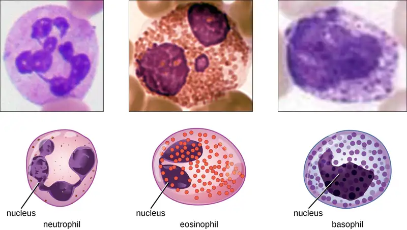
Neutrophils (PMNs)¶
Neutrophils (PMNs) are frequently involved in the elimination and destruction of extracellular bacteria. They are capable of migrating through the walls of blood vessels to areas of bacterial infection and tissue damage, where they seek out and kill infectious bacteria. PMN granules contain a variety of defensins and hydrolytic enzymes that help them destroy bacteria through phagocytosis (described in more detail in Pathogen Recognition and Phagocytosis) In addition, when many neutrophils are brought into an infected area, they can be stimulated to release toxic molecules into the surrounding tissue to better clear infectious agents. This is called degranulation.
Another mechanism used by neutrophils is neutrophil extracellular traps (NETs), which are extruded meshes of chromatin that are closely associated with antimicrobial granule proteins and components. Chromatin is DNA with associated proteins (usually histone proteins, around which DNA wraps for organization and packing within a cell). By creating and releasing a mesh or lattice-like structure of chromatin that is coupled with antimicrobial proteins, the neutrophils can mount a highly concentrated and efficient attack against nearby pathogens. Proteins frequently associated with NETs include lactoferrin, gelatinase, cathepsin G, and myeloperoxidase. Each has a different means of promoting antimicrobial activity, helping neutrophils eliminate pathogens. The toxic proteins in NETs may kill some of the body’s own cells along with invading pathogens. However, this collateral damage can be repaired after the danger of the infection has been eliminated.
As neutrophils fight an infection, a visible accumulation of leukocytes, cellular debris, and bacteria at the site of infection can be observed. This buildup is what we call pus (also known as purulent or suppurative discharge or drainage). The presence of pus is a sign that the immune defenses have been activated against an infection; historically, some physicians believed that inducing pus formation could actually promote the healing of wounds. The practice of promoting “laudable pus” (by, for instance, wrapping a wound in greasy wool soaked in wine) dates back to the ancient physician Galen in the 2nd century AD, and was practiced in variant forms until the 17th century (though it was not universally accepted). Today, this method is no longer practiced because we now know that it is not effective. Although a small amount of pus formation can indicate a strong immune response, artificially inducing pus formation does not promote recovery.
Eosinophils¶
Eosinophils are granulocytes that protect against protozoa and helminths; they also play a role in allergic reactions. The granules of eosinophils, which readily absorb the acidic reddish dye eosin, contain histamine, degradative enzymes, and a compound known as major basic protein (MBP) (Figure 17.14). MBP binds to the surface carbohydrates of parasites, and this binding is associated with disruption of the cell membrane and membrane permeability.
Basophils¶
Basophils have cytoplasmic granules of varied size and are named for their granules’ ability to absorb the basic dye methylene blue (Figure 17.14). Their stimulation and degranulation can result from multiple triggering events. Activated complement fragments C3a and C5a, produced in the activation cascades of complement proteins, act as anaphylatoxins by inducing degranulation of basophils and inflammatory responses. This cell type is important in allergic reactions and other responses that involve inflammation. One of the most abundant components of basophil granules is histamine, which is released along with other chemical factors when the basophil is stimulated. These chemicals can be chemotactic and can help to open the gaps between cells in the blood vessels. Other mechanisms for basophil triggering require the assistance of antibodies, as discussed in B Lymphocytes and Humoral Immunity.
Mast Cells¶
Hematopoiesis also gives rise to mast cells, which appear to be derived from the same common myeloid progenitor cell as neutrophils, eosinophils, and basophils. Functionally, mast cells are very similar to basophils, containing many of the same components in their granules (e.g., histamine) and playing a similar role in allergic responses and other inflammatory reactions. However, unlike basophils, mast cells leave the circulating blood and are most frequently found residing in tissues. They are often associated with blood vessels and nerves or found close to surfaces that interface with the external environment, such as the skin and mucous membranes in various regions of the body (Figure 17.15).
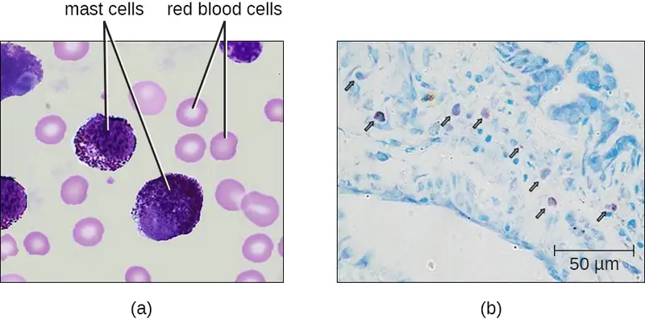
Check Your Understanding
- Describe the granules and nuclei of neutrophils, eosinophils, basophils, and mast cells.
- Name three antimicrobial mechanisms of neutrophils
Clinical Focus: Part 3
Angela’s tests come back negative for all common allergens, and her sputum samples contain no abnormal presence of pathogenic microbes or elevated levels of members of the normal respiratory microbiota. She does, however, have elevated levels of inflammatory cytokines in her blood.
The swelling of her airway has still not responded to treatment with antihistamines or corticosteroids. Additional blood work shows that Angela has a mildly elevated white blood cell count but normal antibody levels. Also, she has a lower-than-normal level of the complement protein C4.
- What does this new information reveal about the cause of Angela’s constricted airways?
- What are some possible conditions that could lead to low levels of complement proteins?
Jump to the next Clinical Focus box. Go back to the previous Clinical Focus box.
Agranulocytes¶
As their name suggests, agranulocytes lack visible granules in the cytoplasm. Agranulocytes can be categorized as lymphocytes or monocytes (Figure 17.13). Among the lymphocytes are natural killer cells, which play an important role in nonspecific innate immune defenses. Lymphocytes also include the B cells and T cells, which are discussed in the next chapter because they are central players in the specific adaptive immune defenses. The monocytes differentiate into macrophages and dendritic cells, which are collectively referred to as the mononuclear phagocyte system.
Natural Killer Cells¶
Most lymphocytes are primarily involved in the specific adaptive immune response, and thus will be discussed in the following chapter. An exception is the natural killer cells (NK cells); these mononuclear lymphocytes use nonspecific mechanisms to recognize and destroy cells that are abnormal in some way. Cancer cells and cells infected with viruses are two examples of cellular abnormalities that are targeted by NK cells. Recognition of such cells involves a complex process of identifying inhibitory and activating molecular markers on the surface of the target cell. Molecular markers that make up the major histocompatibility complex (MHC) are expressed by healthy cells as an indication of “self.” This will be covered in more detail in next chapter. NK cells are able to recognize normal MHC markers on the surface of healthy cells, and these MHC markers serve as an inhibitory signal preventing NK cell activation. However, cancer cells and virus-infected cells actively diminish or eliminate expression of MHC markers on their surface. When these MHC markers are diminished or absent, the NK cell interprets this as an abnormality and a cell in distress. This is one part of the NK cell activation process (Figure 17.16). NK cells are also activated by binding to activating molecular molecules on the target cell. These activating molecular molecules include “altered self” or “nonself” molecules. When a NK cell recognizes a decrease in inhibitory normal MHC molecules and an increase in activating molecules on the surface of a cell, the NK cell will be activated to eliminate the cell in distress.
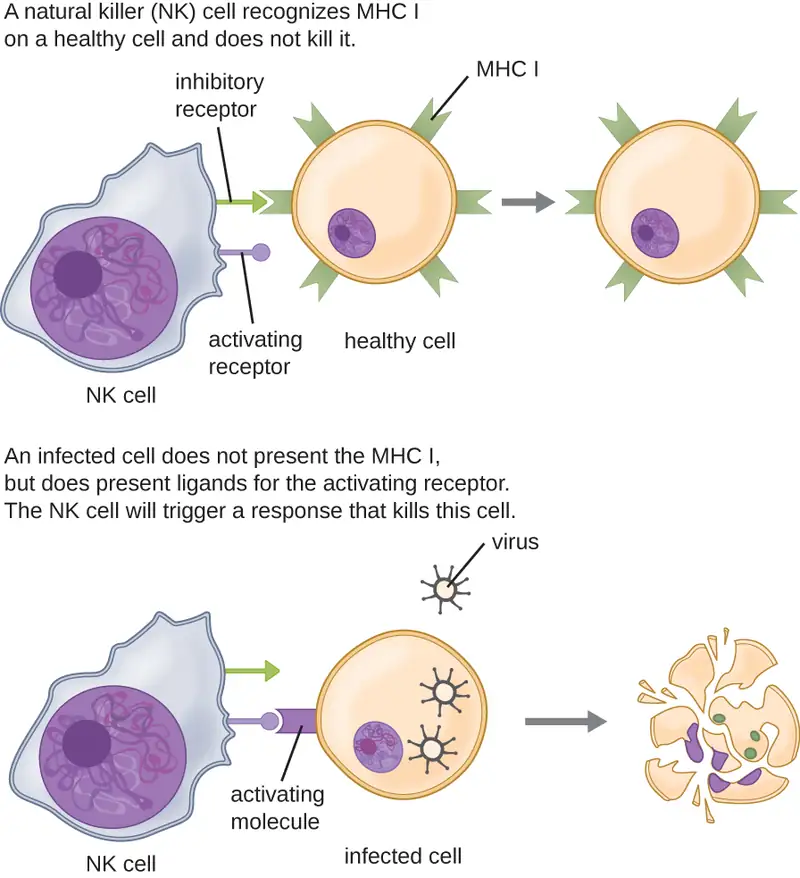
Once a cell has been recognized as a target, the NK cell can use several different mechanisms to kill its target. For example, it may express cytotoxic membrane proteins and cytokines that stimulate the target cell to undergo apoptosis, or controlled cell suicide. NK cells may also use perforin-mediated cytotoxicity to induce apoptosis in target cells. This mechanism relies on two toxins released from granules in the cytoplasm of the NK cell: perforin, a protein that creates pores in the target cell, and granzymes, proteases that enter through the pores into the target cell’s cytoplasm, where they trigger a cascade of protein activation that leads to apoptosis. The NK cell binds to the abnormal target cell, releases its destructive payload, and detaches from the target cell. While the target cell undergoes apoptosis, the NK cell synthesizes more perforin and proteases to use on its next target.
NK cells contain these toxic compounds in granules in their cytoplasm. When stained, the granules are azurophilic and can be visualized under a light microscope (Figure 17.17). Even though they have granules, NK cells are not considered granulocytes because their granules are far less numerous than those found in true granulocytes. Furthermore, NK cells have a different lineage than granulocytes, arising from lymphoid rather than myeloid stem cells (Figure 17.12).
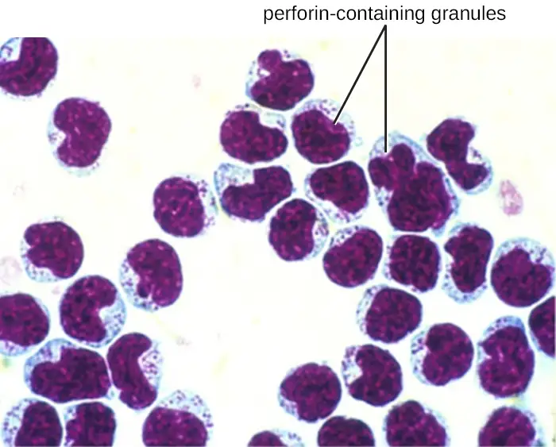
Monocytes¶
The largest of the white blood cells, monocytes have a nucleus that lacks lobes, and they also lack granules in the cytoplasm (Figure 17.18). Nevertheless, they are effective phagocytes, engulfing pathogens and apoptotic cells to help fight infection.
When monocytes leave the bloodstream and enter a specific body tissue, they differentiate into tissue-specific phagocytes called macrophages and dendritic cells. They are particularly important residents of lymphoid tissue, as well as nonlymphoid sites and organs. Macrophages and dendritic cells can reside in body tissues for significant lengths of time. Macrophages in specific body tissues develop characteristics suited to the particular tissue. Not only do they provide immune protection for the tissue in which they reside but they also support normal function of their neighboring tissue cells through the production of cytokines. Macrophages are given tissue-specific names, and a few examples of tissue-specific macrophages are listed in Table 17.6. Dendritic cells are important sentinels residing in the skin and mucous membranes, which are portals of entry for many pathogens. Monocytes, macrophages, and dendritic cells are all highly phagocytic and important promoters of the immune response through their production and release of cytokines. These cells provide an essential bridge between innate and adaptive immune responses, as discussed in the next section as well as the next chapter.
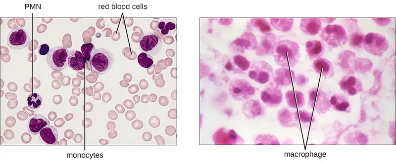
Table 17.6
| Macrophages Found in Various Body Tissues | |
|---|---|
| Tissue | Macrophage |
| Brain and central nervous system | Microglial cells |
| Liver | Kupffer cells |
| Lungs | Alveolar macrophages (dust cells) |
| Peritoneal cavity | Peritoneal macrophages |
Check Your Understanding
- Describe the signals that activate natural killer cells.
- What is the difference between monocytes and macrophages?
17.4 Pathogen Recognition and Phagocytosis¶
Learning Objectives
By the end of this section, you will be able to:
- Explain how leukocytes migrate from peripheral blood into infected tissues
- Explain the mechanisms by which leukocytes recognize pathogens
- Explain the process of phagocytosis and the mechanisms by which phagocytes destroy and degrade pathogens
Several of the cell types discussed in the previous section can be described as phagocytes—cells whose main function is to seek, ingest, and kill pathogens. This process, called phagocytosis, was first observed in starfish in the 1880s by Nobel Prize-winning zoologist Ilya Metchnikoff (1845–1916), who made the connection to white blood cells (WBCs) in humans and other animals. At the time, Pasteur and other scientists believed that WBCs were spreading pathogens rather than killing them (which is true for some diseases, such as tuberculosis). But in most cases, phagocytes provide a strong, swift, and effective defense against a broad range of microbes, making them a critical component of innate nonspecific immunity. This section will focus on the mechanisms by which phagocytes are able to seek, recognize, and destroy pathogens.
Extravasation (Diapedesis) of Leukocytes¶
Some phagocytes are leukocytes (WBCs) that normally circulate in the bloodstream. To reach pathogens located in infected tissue, leukocytes must pass through the walls of small capillary blood vessels within tissues. This process, called extravasation, or diapedesis, is initiated by complement factor C5a, as well as cytokines released into the immediate vicinity by resident macrophages and tissue cells responding to the presence of the infectious agent (Figure 17.19). Similar to C5a, many of these cytokines are proinflammatory and chemotactic, and they bind to cells of small capillary blood vessels, initiating a response in the endothelial cells lining the inside of the blood vessel walls. This response involves the upregulation and expression of various cellular adhesion molecules and receptors. Leukocytes passing through will stick slightly to the adhesion molecules, slowing down and rolling along the blood vessel walls near the infected area. When they reach a cellular junction, they will bind to even more of these adhesion molecules, flattening out and squeezing through the cellular junction in a process known as transendothelial migration. This mechanism of “rolling adhesion” allows leukocytes to exit the bloodstream and enter the infected areas, where they can begin phagocytosing the invading pathogens.
Note that extravasation does not occur in arteries or veins. These blood vessels are surrounded by thicker, multilayer protective walls, in contrast to the thin single-cell-layer walls of capillaries. Furthermore, the blood flow in arteries is too turbulent to allow for rolling adhesion. Also, some leukocytes tend to respond to an infection more quickly than others. The first to arrive typically are neutrophils, often within hours of a bacterial infection. By contract, monocytes may take several days to leave the bloodstream and differentiate into macrophages.
![A diagram with 3 steps. The first step states: leukocytes in the blood respond to chemical attractants released by pathogens and chemical signals from nearby injured cells. An injury to the surface of the skin is labeled: injured/infected cells secrete chemical signals into the blood. Pathogens are present in the wound. Neutrophils and monocytes are in the blood stream; and the outside of the vessel is labeled capillary epithelial cells. A resident macrophage engulfs the pathogens and releases proinflammatory chemotactic cytokines. The second step states: the leukocytes squeeze between the cells of the capillary wall as they follow the chemical signals to where they are most concentrated (positive chemotaxis). The leukocytes emigrate to the site of injury and infection. The chemical signals present include C5a and cytokines. The third panel states: Within the damaged tissue, neutrophils release chemicals that break apart pathogens. Monocytes differentiate into macrophages. Neutrophils and macrophages phagocytize pathogens and cellular debris. Neutrophils release cytotoxic chemicals from granules into tissue.](img/osc-microbio-17-01-injurysite.webp)
Link to Learning
Watch the following videos on leukocyte extravasation and leukocyte rolling to learn more.
Check Your Understanding
- Explain the role of adhesion molecules in the process of extravasation.
Pathogen Recognition¶
As described in the previous section, opsonization of pathogens by antibody; complement factors C1q, C3b, and C4b; and lectins can assist phagocytic cells in recognition of pathogens and attachment to initiate phagocytosis. However, not all pathogen recognition is opsonin dependent. Phagocytes can also recognize molecular structures that are common to many groups of pathogenic microbes. Such structures are called pathogen-associated molecular patterns (PAMPs). Common PAMPs include the following:
- peptidoglycan, found in bacterial cell walls;
- flagellin, a protein found in bacterial flagella;
- lipopolysaccharide (LPS) from the outer membrane of gram-negative bacteria;
- lipopeptides, molecules expressed by most bacteria; and
- nucleic acids such as viral DNA or RNA.
Like numerous other PAMPs, these substances are integral to the structure of broad classes of microbes.
The structures that allow phagocytic cells to detect PAMPs are called pattern recognition receptors (PRRs). One group of PRRs is the toll-like receptors (TLRs), which bind to various PAMPs and communicate with the nucleus of the phagocyte to elicit a response. Many TLRs (and other PRRs) are located on the surface of a phagocyte, but some can also be found embedded in the membranes of interior compartments and organelles (Figure 17.20). These interior PRRs can be useful for the binding and recognition of intracellular pathogens that may have gained access to the inside of the cell before phagocytosis could take place. Viral nucleic acids, for example, might encounter an interior PRR, triggering production of the antiviral cytokine interferon.
In addition to providing the first step of pathogen recognition, the interaction between PAMPs and PRRs on macrophages provides an intracellular signal that activates the phagocyte, causing it to transition from a dormant state of readiness and slow proliferation to a state of hyperactivity, proliferation, production/secretion of cytokines, and enhanced intracellular killing. PRRs on macrophages also respond to chemical distress signals from damaged or stressed cells. This allows macrophages to extend their responses beyond protection from infectious diseases to a broader role in the inflammatory response initiated from injuries or other diseases.
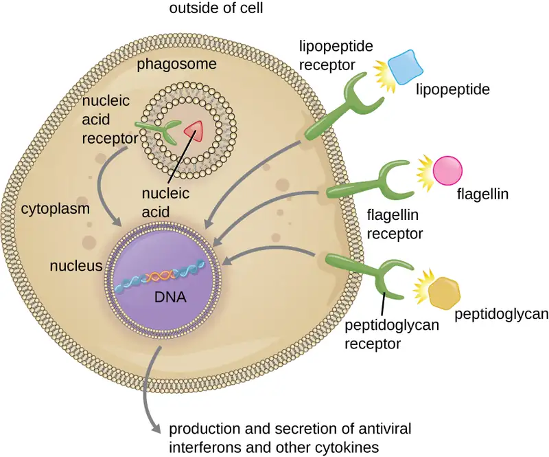
Check Your Understanding
- Name four pathogen-associated molecular patterns (PAMPs).
- Describe the process of phagocyte activation.
Pathogen Degradation¶
Once pathogen recognition and attachment occurs, the pathogen is engulfed in a vesicle and brought into the internal compartment of the phagocyte in a process called phagocytosis (Figure 17.21). PRRs can aid in phagocytosis by first binding to the pathogen’s surface, but phagocytes are also capable of engulfing nearby items even if they are not bound to specific receptors. To engulf the pathogen, the phagocyte forms a pseudopod that wraps around the pathogen and then pinches it off into a membrane vesicle called a phagosome. Acidification of the phagosome (pH decreases to the range of 4–5) provides an important early antibacterial mechanism. The phagosome containing the pathogen fuses with one or more lysosomes, forming a phagolysosome. Formation of the phagolysosome enhances the acidification, which is essential for activation of pH-dependent digestive lysosomal enzymes and production of hydrogen peroxide and toxic reactive oxygen species. Lysosomal enzymes such as lysozyme, phospholipase, and proteases digest the pathogen. Other enzymes are involved in a respiratory burst. During the respiratory burst, phagocytes will increase their uptake and consumption of oxygen, but not for energy production. The increased oxygen consumption is focused on the production of superoxide anion, hydrogen peroxide, hydroxyl radicals, and other reactive oxygen species that are antibacterial.
In addition to the reactive oxygen species produced by the respiratory burst, reactive nitrogen compounds with cytotoxic (cell-killing) potential can also form. For example, nitric oxide can react with superoxide to form peroxynitrite, a highly reactive nitrogen compound with degrading capabilities similar to those of the reactive oxygen species. Some phagocytes even contain an internal storehouse of microbicidal defensin proteins (e.g., neutrophil granules). These destructive forces can be released into the area around the cell to degrade microbes externally. Neutrophils, especially, can be quite efficient at this secondary antimicrobial mechanism.
Once degradation is complete, leftover waste products are excreted from the cell in an exocytic vesicle. However, it is important to note that not all remains of the pathogen are excreted as waste. Macrophages and dendritic cells are also antigen-presenting cells involved in the specific adaptive immune response. These cells further process the remains of the degraded pathogen and present key antigens (specific pathogen proteins) on their cellular surface. This is an important step for stimulation of some adaptive immune responses, as will be discussed in more detail in the next chapter.
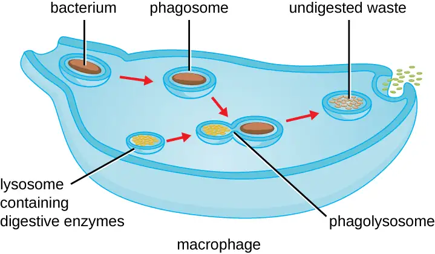
Link to Learning
Visit this link to view a phagocyte chasing and engulfing a pathogen.
Check Your Understanding
- What is the difference between a phagosome and a lysosome?
Micro Connections: When Phagocytosis Fails
Although phagocytosis successfully destroys many pathogens, some are able to survive and even exploit this defense mechanism to multiply in the body and cause widespread infection. Protozoans of the genus Leishmania are one example. These obligate intracellular parasites are flagellates transmitted to humans by the bite of a sand fly. Infections cause serious and sometimes disfiguring sores and ulcers in the skin and other tissues (Figure 17.22). Worldwide, an estimated 1.3 million people are newly infected with leishmaniasis annually.1
Salivary peptides from the sand fly activate host macrophages at the site of their bite. The classic or alternate pathway for complement activation ensues with C3b opsonization of the parasite. Leishmania cells are phagocytosed, lose their flagella, and multiply in a form known as an amastigote (Leishman-Donovan body) within the phagolysosome. Although many other pathogens are destroyed in the phagolysosome, survival of the Leishmania amastigotes is maintained by the presence of surface lipophosphoglycan and acid phosphatase. These substances inhibit the macrophage respiratory burst and lysosomal enzymes. The parasite then multiplies inside the cell and lyses the infected macrophage, releasing the amastigotes to infect other macrophages within the same host. Should another sand fly bite an infected person, it might ingest amastigotes and then transmit them to another individual through another bite.
There are several different forms of leishmaniasis. The most common is a localized cutaneous form of the illness caused by L. tropica, which typically resolves spontaneously over time but with some significant lymphocyte infiltration and permanent scarring. A mucocutaneous form of the disease, caused by L. viannia brasilienfsis, produces lesions in the tissue of the nose and mouth and can be life threatening. A visceral form of the illness can be caused by several of the different Leishmania species. It affects various organ systems and causes abnormal enlargement of the liver and spleen. Irregular fevers, anemia, liver dysfunction, and weight loss are all signs and symptoms of visceral leishmaniasis. If left untreated, it is typically fatal.
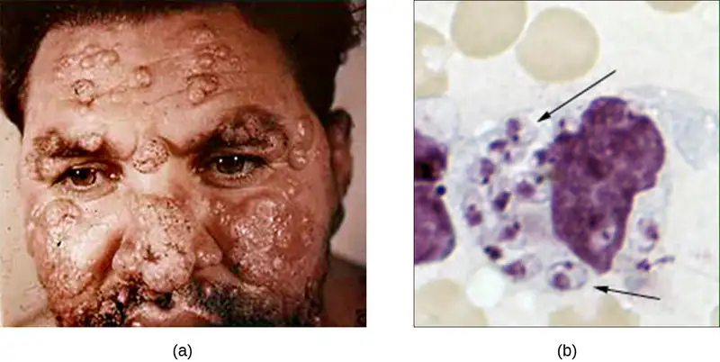
17.5 Inflammation and Fever¶
Learning Objectives
By the end of this section, you will be able to:
- Identify the signs of inflammation and fever and explain why they occur
- Explain the advantages and risks posed by inflammatory responses
The inflammatory response, or inflammation, is triggered by a cascade of chemical mediators and cellular responses that may occur when cells are damaged and stressed or when pathogens successfully breach the physical barriers of the innate immune system. Although inflammation is typically associated with negative consequences of injury or disease, it is a necessary process insofar as it allows for recruitment of the cellular defenses needed to eliminate pathogens, remove damaged and dead cells, and initiate repair mechanisms. Excessive inflammation, however, can result in local tissue damage and, in severe cases, may even become deadly.
Acute Inflammation¶
An early, if not immediate, response to tissue injury is acute inflammation. Immediately following an injury, vasoconstriction of blood vessels will occur to minimize blood loss. The amount of vasoconstriction is related to the amount of vascular injury, but it is usually brief. Vasoconstriction is followed by vasodilation and increased vascular permeability, as a direct result of the release of histamine from resident mast cells. Increased blood flow and vascular permeability can dilute toxins and bacterial products at the site of injury or infection. They also contribute to the five observable signs associated with the inflammatory response: erythema (redness), edema (swelling), heat, pain, and altered function. Vasodilation and increased vascular permeability are also associated with an influx of phagocytes at the site of injury and/or infection. This can enhance the inflammatory response because phagocytes may release proinflammatory chemicals when they are activated by cellular distress signals released from damaged cells, by PAMPs, or by opsonins on the surface of pathogens. Activation of the complement system can further enhance the inflammatory response through the production of the anaphylatoxin C5a. Figure 17.23 illustrates a typical case of acute inflammation at the site of a skin wound.
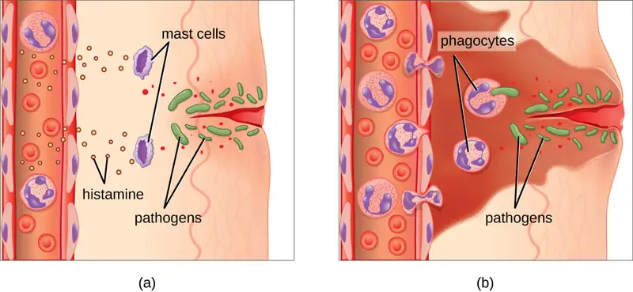
During the period of inflammation, the release of bradykinin causes capillaries to remain dilated, flooding tissues with fluids and leading to edema. Increasing numbers of neutrophils are recruited to the area to fight pathogens. As the fight rages on, pus forms from the accumulation of neutrophils, dead cells, tissue fluids, and lymph. Typically, after a few days, macrophages will help to clear out this pus. Eventually, tissue repair can begin in the wounded area.
Chronic Inflammation¶
When acute inflammation is unable to clear an infectious pathogen, chronic inflammation may occur. This often results in an ongoing (and sometimes futile) lower-level battle between the host organism and the pathogen. The wounded area may heal at a superficial level, but pathogens may still be present in deeper tissues, stimulating ongoing inflammation. Additionally, chronic inflammation may be involved in the progression of degenerative neurological diseases such as Alzheimer’s and Parkinson’s, heart disease, and metastatic cancer.
Chronic inflammation may lead to the formation of granulomas, pockets of infected tissue walled off and surrounded by WBCs. Macrophages and other phagocytes wage an unsuccessful battle to eliminate the pathogens and dead cellular materials within a granuloma. One example of a disease that produces chronic inflammation is tuberculosis, which results in the formation of granulomas in lung tissues. A tubercular granuloma is called a tubercle (Figure 17.24). Tuberculosis will be covered in more detail in Bacterial Infections of the Respiratory Tract.
Chronic inflammation is not just associated with bacterial infections. Chronic inflammation can be an important cause of tissue damage from viral infections. The extensive scarring observed with hepatitis C infections and liver cirrhosis is the result of chronic inflammation.
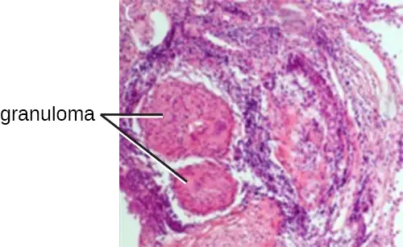
Check Your Understanding
- Name the five signs of inflammation.
- Is a granuloma an acute or chronic form of inflammation? Explain.
Micro Connections: Chronic Edema
In addition to granulomas, chronic inflammation can also result in long-term edema. A condition known as lymphatic filariasis (also known as elephantiasis) provides an extreme example. Lymphatic filariasis is caused by microscopic nematodes (parasitic worms) whose larvae are transmitted between human hosts by mosquitoes. Adult worms live in the lymphatic vessels, where their presence stimulates infiltration by lymphocytes, plasma cells, eosinophils, and thrombocytes (a condition known as lymphangitis). Because of the chronic nature of the illness, granulomas, fibrosis, and blocking of the lymphatic system may eventually occur. Over time, these blockages may worsen with repeated infections over decades, leading to skin thickened with edema and fibrosis. Lymph (extracellular tissue fluid) may spill out of the lymphatic areas and back into tissues, causing extreme swelling (Figure 17.25). Secondary bacterial infections commonly follow. Because it is a disease caused by a parasite, eosinophilia (a dramatic rise in the number of eosinophils in the blood) is characteristic of acute infection. However, this increase in antiparasite granulocytes is not sufficient to clear the infection in many cases.
Lymphatic filariasis affects an estimated 120 million people worldwide, mostly concentrated in Africa and Asia.2 Improved sanitation and mosquito control can reduce transmission rates.
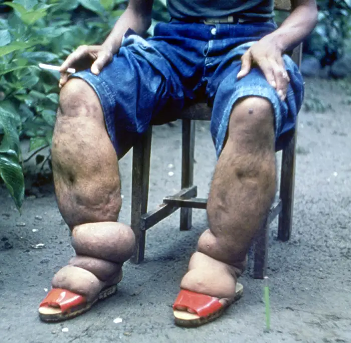
Fever¶
A fever is an inflammatory response that extends beyond the site of infection and affects the entire body, resulting in an overall increase in body temperature. Body temperature is normally regulated and maintained by the hypothalamus, an anatomical section of the brain that functions to maintain homeostasis in the body. However, certain bacterial or viral infections can result in the production of pyrogens, chemicals that effectively alter the “thermostat setting” of the hypothalamus to elevate body temperature and cause fever. Pyrogens may be exogenous or endogenous. For example, the endotoxin lipopolysaccharide (LPS), produced by gram-negative bacteria, is an exogenous pyrogen that may induce the leukocytes to release endogenous pyrogens such as interleukin-1 (IL-1), IL-6, interferon-γ (IFN-γ), and tumor necrosis factor (TNF). In a cascading effect, these molecules can then lead to the release of prostaglandin E2 (PGE2) from other cells, resetting the hypothalamus to initiate fever (Figure 17.26).
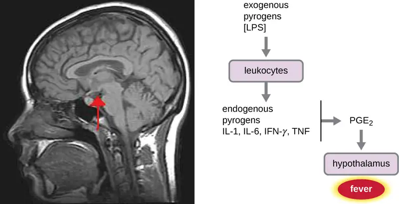
Like other forms of inflammation, a fever enhances the innate immune defenses by stimulating leukocytes to kill pathogens. The rise in body temperature also may inhibit the growth of many pathogens since human pathogens are mesophiles with optimum growth occurring around 35 °C (95 °F). In addition, some studies suggest that fever may also stimulate release of iron-sequestering compounds from the liver, thereby starving out microbes that rely on iron for growth.3
During fever, the skin may appear pale due to vasoconstriction of the blood vessels in the skin, which is mediated by the hypothalamus to divert blood flow away from extremities, minimizing the loss of heat and raising the core temperature. The hypothalamus will also stimulate shivering of muscles, another effective mechanism of generating heat and raising the core temperature.
The crisis phase occurs when the fever breaks. The hypothalamus stimulates vasodilation, resulting in a return of blood flow to the skin and a subsequent release of heat from the body. The hypothalamus also stimulates sweating, which cools the skin as the sweat evaporates.
Although a low-level fever may help an individual overcome an illness, in some instances, this immune response can be too strong, causing tissue and organ damage and, in severe cases, even death. The inflammatory response to bacterial superantigens is one scenario in which a life-threatening fever may develop. Superantigens are bacterial or viral proteins that can cause an excessive activation of T cells from the specific adaptive immune defense, as well as an excessive release of cytokines that overstimulates the inflammatory response. For example, Staphylococcus aureus and Streptococcus pyogenes are capable of producing superantigens that cause toxic shock syndrome and scarlet fever, respectively. Both of these conditions can be associated with very high, life-threatening fevers in excess of 42 °C (108 °F).
Check Your Understanding
- Explain the difference between exogenous and endogenous pyrogens.
- How does a fever inhibit pathogens?
Clinical Focus: Resolution
Given her father’s premature death, Angela’s doctor suspects that she has hereditary angioedema, a genetic disorder that compromises the function of C1 inhibitor protein. Patients with this genetic abnormality may have occasional episodes of swelling in various parts of the body. In Angela’s case, the swelling has occurred in the respiratory tract, leading to difficulty breathing. Swelling may also occur in the gastrointestinal tract, causing abdominal cramping, diarrhea, and vomiting, or in the muscles of the face or limbs. This swelling may be nonresponsive to steroid treatment and is often misdiagnosed as an allergy.
Because there are three types of hereditary angioedema, the doctor orders a more specific blood test to look for levels of C1-INH, as well as a functional assay of Angela’s C1 inhibitors. The results suggest that Angela has type I hereditary angioedema, which accounts for 80%–85% of all cases. This form of the disorder is caused by a deficiency in C1 esterase inhibitors, the proteins that normally help suppress activation of the complement system. When these proteins are deficient or nonfunctional, overstimulation of the system can lead to production of inflammatory anaphylatoxins, which results in swelling and fluid buildup in tissues.
There is no cure for hereditary angioedema, but timely treatment with purified and concentrated C1-INH from blood donors can be effective, preventing tragic outcomes like the one suffered by Angela’s father. A number of therapeutic drugs, either currently approved or in late-stage human trials, may also be considered as options for treatment in the near future. These drugs work by inhibiting inflammatory molecules or the receptors for inflammatory molecules.
Thankfully, Angela’s condition was quickly diagnosed and treated. Although she may experience additional episodes in the future, her prognosis is good and she can expect to live a relatively normal life provided she seeks treatment at the onset of symptoms.
Go back to the previous Clinical Focus box.
Chapter Review¶
Key Concepts and Summary¶
17.1 Physical Defenses¶
- Nonspecific innate immunity provides a first line of defense against infection by nonspecifically blocking entry of microbes and targeting them for destruction or removal from the body.
- The physical defenses of innate immunity include physical barriers, mechanical actions that remove microbes and debris, and the microbiome, which competes with and inhibits the growth of pathogens.
- The skin, mucous membranes, and endothelia throughout the body serve as physical barriers that prevent microbes from reaching potential sites of infection. Tight cell junctions in these tissues prevent microbes from passing through.
- Microbes trapped in dead skin cells or mucus are removed from the body by mechanical actions such as shedding of skin cells, mucociliary sweeping, coughing, peristalsis, and flushing of bodily fluids (e.g., urination, tears)
- The resident microbiota provide a physical defense by occupying available cellular binding sites and competing with pathogens for available nutrients.
17.2 Chemical Defenses¶
- Numerous chemical mediators produced endogenously and exogenously exhibit nonspecific antimicrobial functions.
- Many chemical mediators are found in body fluids such as sebum, saliva, mucus, gastric and intestinal fluids, urine, tears, cerumen, and vaginal secretions.
- Antimicrobial peptides (AMPs) found on the skin and in other areas of the body are largely produced in response to the presence of pathogens. These include dermcidin, cathelicidin, defensins, histatins, and bacteriocins.
- Plasma contains various proteins that serve as chemical mediators, including acute-phase proteins, complement proteins, and cytokines.
- The complement system involves numerous precursor proteins that circulate in plasma. These proteins become activated in a cascading sequence in the presence of microbes, resulting in the opsonization of pathogens, chemoattraction of leukocytes, induction of inflammation, and cytolysis through the formation of a membrane attack complex (MAC).
- Cytokines are proteins that facilitate various nonspecific responses by innate immune cells, including production of other chemical mediators, cell proliferation, cell death, and differentiation.
- Cytokines play a key role in the inflammatory response, triggering production of inflammation-eliciting mediators such as acute-phase proteins, histamine, leukotrienes, prostaglandins, and bradykinin.
17.3 Cellular Defenses¶
- The formed elements of the blood include red blood cells (erythrocytes), white blood cells (leukocytes), and platelets (thrombocytes). Of these, leukocytes are primarily involved in the immune response.
- All formed elements originate in the bone marrow as stem cells (HSCs) that differentiate through hematopoiesis.
- Granulocytes are leukocytes characterized by a lobed nucleus and granules in the cytoplasm. These include neutrophils (PMNs), eosinophils, and basophils.
- Neutrophils are the leukocytes found in the largest numbers in the bloodstream and they primarily fight bacterial infections.
- Eosinophils target parasitic infections. Eosinophils and basophils are involved in allergic reactions. Both release histamine and other proinflammatory compounds from their granules upon stimulation.
- Mast cells function similarly to basophils but can be found in tissues outside the bloodstream.
- Natural killer (NK) cells are lymphocytes that recognize and kill abnormal or infected cells by releasing proteins that trigger apoptosis.
- Monocytes are large, mononuclear leukocytes that circulate in the bloodstream. They may leave the bloodstream and take up residence in body tissues, where they differentiate and become tissue-specific macrophages and dendritic cells.
17.4 Pathogen Recognition and Phagocytosis¶
- Phagocytes are cells that recognize pathogens and destroy them through phagocytosis.
- Recognition often takes place by the use of phagocyte receptors that bind molecules commonly found on pathogens, known as pathogen-associated molecular patterns (PAMPs).
- The receptors that bind PAMPs are called pattern recognition receptors, or PRRs. Toll-like receptors (TLRs) are one type of PRR found on phagocytes.
- Extravasation of white blood cells from the bloodstream into infected tissue occurs through the process of transendothelial migration.
- Phagocytes degrade pathogens through phagocytosis, which involves engulfing the pathogen, killing and digesting it within a phagolysosome, and then excreting undigested matter.
17.5 Inflammation and Fever¶
- Inflammation results from the collective response of chemical mediators and cellular defenses to an injury or infection.
- Acute inflammation is short lived and localized to the site of injury or infection. Chronic inflammation occurs when the inflammatory response is unsuccessful, and may result in the formation of granulomas (e.g., with tuberculosis) and scarring (e.g., with hepatitis C viral infections and liver cirrhosis).
- The five cardinal signs of inflammation are erythema, edema, heat, pain, and altered function. These largely result from innate responses that draw increased blood flow to the injured or infected tissue.
- Fever is a system-wide sign of inflammation that raises the body temperature and stimulates the immune response.
- Both inflammation and fever can be harmful if the inflammatory response is too severe.
Multiple Choice¶
17.1 Physical Defenses¶
1. Which of the following best describes the innate nonspecific immune system?
- a targeted and highly specific response to a single pathogen or molecule
- a generalized and nonspecific set of defenses against a class or group of pathogens
- a set of barrier mechanisms that adapts to specific pathogens after repeated exposure
- the production of antibody molecules against pathogens
Answer
B
2. Which of the following constantly sheds dead cells along with any microbes that may be attached to those cells?
- epidermis
- dermis
- hypodermis
- mucous membrane
Answer
A
3. Which of the following uses a particularly dense suite of tight junctions to prevent microbes from entering the underlying tissue?
- the mucociliary escalator
- the epidermis
- the blood-brain barrier
- the urethra
Answer
C
17.2 Chemical Defenses¶
4. Which of the following serve as chemical signals between cells and stimulate a wide range of nonspecific defenses?
- cytokines
- antimicrobial peptides
- complement proteins
- antibodies
Answer
A
5. Bacteriocins and defensins are types of which of the following?
- leukotrienes
- cytokines
- inflammation-eliciting mediators
- antimicrobial peptides
Answer
D
6. Which of the following chemical mediators is secreted onto the surface of the skin?
- cerumen
- sebum
- gastric acid
- prostaglandin
Answer
B
7. Identify the complement activation pathway that is triggered by the binding of an acute-phase protein to a pathogen.
- classical
- alternate
- lectin
- cathelicidin
Answer
C
8. Histamine, leukotrienes, prostaglandins, and bradykinin are examples of which of the following?
- chemical mediators primarily found in the digestive system
- chemical mediators that promote inflammation
- antimicrobial peptides found on the skin
- complement proteins that form MACs
Answer
B
17.3 Cellular Defenses¶
9. White blood cells are also referred to as which of the following?
- platelets
- erythrocytes
- leukocytes
- megakaryocytes
Answer
C
10. Hematopoiesis occurs in which of the following?
- liver
- bone marrow
- kidneys
- central nervous system
Answer
B
11. Granulocytes are which type of cell?
- lymphocyte
- erythrocyte
- megakaryocyte
- leukocyte
Answer
D
17.4 Pathogen Recognition and Phagocytosis¶
12. PAMPs would be found on the surface of which of the following?
- pathogen
- phagocyte
- skin cell
- blood vessel wall
Answer
A
13. ________ on phagocytes bind to PAMPs on bacteria, which triggers the uptake and destruction of the bacterial pathogens?
- PRRs
- AMPs
- PAMPs
- PMNs
Answer
A
14. Which of the following best characterizes the mode of pathogen recognition for opsonin-dependent phagocytosis?
- Opsonins produced by a pathogen attract phagocytes through chemotaxis.
- A PAMP on the pathogen’s surface is recognized by a phagocyte’s toll-like receptors.
- A pathogen is first coated with a molecule such as a complement protein, which allows it to be recognized by phagocytes.
- A pathogen is coated with a molecule such as a complement protein that immediately lyses the cell.
Answer
C
17.5 Inflammation and Fever¶
15. Which refers to swelling as a result of inflammation?
- erythema
- edema
- granuloma
- vasodilation
Answer
B
16. Which type of inflammation occurs at the site of an injury or infection?
- acute
- chronic
- endogenous
- exogenous
Answer
A
Fill in the Blank¶
17.1 Physical Defenses¶
17. The muscular contraction of the intestines that results in movement of material through the digestive tract is called ________.
Answer
peristalsis
18. ______ are the hair-like appendages of cells lining parts of the respiratory tract that sweep debris away from the lungs.
Answer
cilia
19. Secretions that bathe and moisten the interior of the intestines are produced by _______ cells.
Answer
goblet
17.2 Chemical Defenses¶
20. ________ are antimicrobial peptides produced by members of the normal microbiota.
Answer
bacteriocins
21. ________ is the fluid portion of a blood sample that has been drawn in the presence of an anticoagulant compound.
Answer
plasma
22. The process by which cells are drawn or attracted to an area by a microbe invader is known as ________.
Answer
chemotaxis
17.3 Cellular Defenses¶
23. Platelets are also called ________.
Answer
thrombocytes
24. The cell in the bone marrow that gives rise to all other blood cell types is the ________.
Answer
pluripotent hematopoietic stem cell (HSC)
25. PMNs are another name for ________.
Answer
neutrophils
26. Kupffer cells residing in the liver are a type of ________.
Answer
macrophage
27. _____________ are similar to basophils, but reside in tissues rather than circulating in the blood.
Answer
mast cells
17.4 Pathogen Recognition and Phagocytosis¶
28. ________, also known as diapedesis, refers to the exit from the bloodstream of neutrophils and other circulating leukocytes.
Answer
extravasation
29. Toll-like receptors are examples of ________.
Answer
pattern-recognition receptors (PRRs)
17.5 Inflammation and Fever¶
30. A(n) ________ is a walled-off area of infected tissue that exhibits chronic inflammation.
Answer
granuloma
31. The ________ is the part of the body responsible for regulating body temperature.
Answer
hypothalamus
32. Heat and redness, or ________, occur when the small blood vessels in an inflamed area dilate (open up), bringing more blood much closer to the surface of the skin.
Answer
erythema
Short Answer¶
17.1 Physical Defenses¶
33. Differentiate a physical barrier from a mechanical removal mechanism and give an example of each.
34. Identify some ways that pathogens can breach the physical barriers of the innate immune system.
17.2 Chemical Defenses¶
35. Differentiate the main activation methods of the classic, alternative, and lectin complement cascades.
36. What are the four protective outcomes of complement activation?
17.3 Cellular Defenses¶
37. Explain the difference between plasma and the formed elements of the blood.
38. List three ways that a neutrophil can destroy an infectious bacterium.
17.4 Pathogen Recognition and Phagocytosis¶
39. Briefly summarize the events leading up to and including the process of transendothelial migration.
17.5 Inflammation and Fever¶
40. Differentiate exogenous and endogenous pyrogens, and provide an example of each.
Matching¶
41. Match each cell type with its description.
| ___natural killer cell | A. stains with basic dye methylene blue, has large amounts of histamine in granules, and facilitates allergic responses and inflammation |
| ___basophil | B. stains with acidic dye eosin, has histamine and major basic protein in granules, and facilitates responses to protozoa and helminths |
| ___macrophage | C. recognizes abnormal cells, binds to them, and releases perforin and granzyme molecules, which induce apoptosis |
| ___eosinophil | D. large agranular phagocyte that resides in tissues such as the brain and lungs |
Answer
C, A, D, B
42. Match each cellular defense with the infection it would most likely target.
| ___natural killer cell | A. virus-infected cell |
| ___neutrophil | B. tapeworm in the intestines |
| ___eosinophil | C. bacteria in a skin lesion |
Answer
A, C, B
Critical Thinking¶
17.3 Cellular Defenses¶
43. Neutrophils can sometimes kill human cells along with pathogens when they release the toxic contents of their granules into the surrounding tissue. Likewise, natural killer cells target human cells for destruction. Explain why it is advantageous for the immune system to have cells that can kill human cells as well as pathogens.
44. Refer to Figure 17.13. In a blood smear taken from a healthy patient, which type of leukocyte would you expect to observe in the highest numbers?
17.5 Inflammation and Fever¶
45. If a gram-negative bacterial infection reaches the bloodstream, large quantities of LPS can be released into the blood, resulting in a syndrome called septic shock. Death due to septic shock is a real danger. The overwhelming immune and inflammatory responses that occur with septic shock can cause a perilous drop in blood pressure; intravascular blood clotting; development of thrombi and emboli that block blood vessels, leading to tissue death; failure of multiple organs; and death of the patient. Identify and characterize two to three therapies that might be useful in stopping the dangerous events and outcomes of septic shock once it has begun, given what you have learned about inflammation and innate immunity in this chapter.
46. In Lubeck, Germany, in 1930, a group of 251 infants was accidentally administered a tainted vaccine for tuberculosis that contained live Mycobacterium tuberculosis. This vaccine was administered orally, directly exposing the infants to the deadly bacterium. Many of these infants contracted tuberculosis, and some died. However, 44 of the infants never contracted tuberculosis. Based on your knowledge of the innate immune system, what innate defenses might have inhibited M. tuberculosis enough to prevent these infants from contracting the disease?
Adapted from Microbiology by OpenStax, licensed under CC BY 4.0. Access the original for free at openstax.org. Changes: converted to the web reading format of The Open Book Project.
-
World Health Organization. “Leishmaniasis.” 2016. http://www.who.int/mediacentre/factsheets/fs375/en/. ↩
-
Centers for Disease Control and Prevention. “Parasites–Lymphatic Filiariasis.” 2016. http://www.cdc.gov/parasites/lymphaticfilariasis/gen_info/faqs.html. ↩
-
N. Parrow et al. “Sequestration and Scavenging of Iron in Infection.” Infection and Immunity 81 no. 10 (2013):3503–3514 ↩